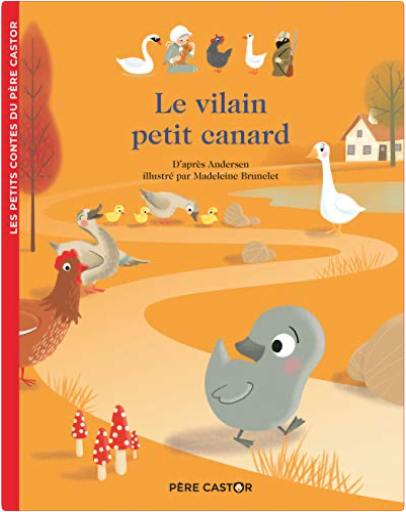

Books
Movies
Albums
Videogames
Games
BD
BD Camille
Blu-ray
Business
Camille
Comics
Cooking
Lego
Manga
Pauline
Photography
Star Wars
T'choupi
Travel
TV Shows
Un livre dont vous êtes le héro
Vinyl
Walt Disney
1
2
3
petite poule rousse
céline alvarez
petit ours brun s'habille tout seul
marie aubinais, danièle bour
roule galette...
natha caputo, pierre belvès
mes premières chansons
mes premières chansons
quel est ce fruit ?
anne crausaz
quel est ce légume ?
anne crausaz
Alerte Rouge - L'Histoire du Film
walt disney
petit lapin blanc est malade
marie-france floury
petit lapin blanc va se coucher
marie-france floury
la moufle
robert giraud, olivier latik
le pique-nique de la famille souris
kazuo iwamura

le vilain petit canard
anne kalicky
1
2
3


 Made with Delicious Library Made with Delicious Library
Made with Delicious Library Made with Delicious Library